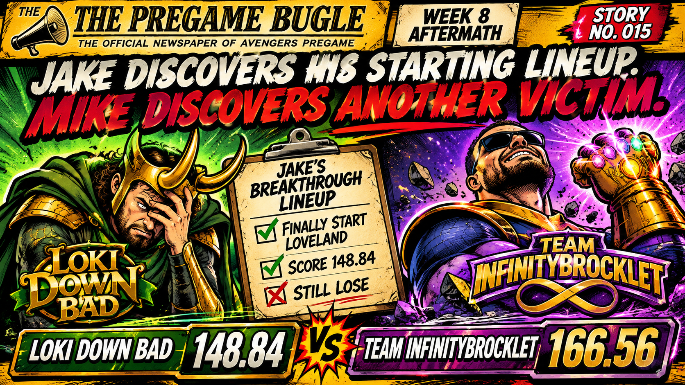

After weeks of watching Colston Loveland put up points from the bench, Jake finally made a groundbreaking discovery.
YOU'RE ALLOWED TO START THE PLAYERS ON YOUR ROSTER.
A revolutionary concept. One that apparently required eight weeks of research and development.
League officials have confirmed Jake's lineup was submitted by Jake himself, although an investigation into possible adult supervision remains ongoing.
And for once, Jake actually looked like a competent fantasy coach. Loki Down Bad put up a season-high 148.84 points, his best performance of the year.
There was just one small problem.
MIKE DIDN'T GIVE A FUCK ABOUT JAKE'S PERSONAL GROWTH.
Team InfinityBrocklet dropped 166.56 points, handing Jake his seventh loss of the season.
Mike spent the first five weeks looking like a tax write-off. Now he's won three straight and is suddenly acting like his franchise has a future.
And credit where it's due. Mike has quietly transformed into one of the league's hottest managers. Three consecutive victories have dragged InfinityBrocklet back to 4–4, and suddenly a playoff run doesn't sound completely delusional.
His 166.56 points were the second-highest total in the league this week, just 0.12 points behind Aaron.
As for Jake, he's now 1–7.
He finally started Loveland. He finally cracked 140 points. He finally gave himself a legitimate chance to win.
And he still got his ass kicked.
WEEK 9 WATCH: Mike enters Week 9 riding a three-game winning streak with his playoff hopes alive. Jake enters Week 9 with one win, seven losses, and the exciting realization that starting your good players doesn't guarantee you won't suck.
JAKE FINALLY LEARNED HOW TO START HIS BEST PLAYERS. NEXT WEEK, WE'LL SEE IF HE CAN LEARN HOW TO WIN.